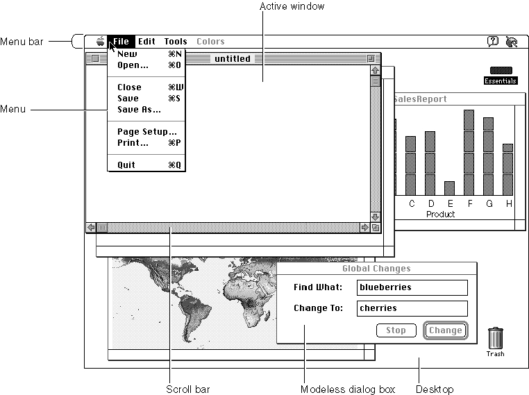

Legacy Document
Important: The information in this document is obsolete and should not be used for new development.
Important: The information in this document is obsolete and should not be used for new development.


Chapter 1 - Introduction to the Macintosh Toolbox
This chapter presents an introduction to the features provided by the Macintosh Toolbox. The Macintosh Toolbox is a collection of system software routines that your application can use to present a consistent and standard interface to the user; these routines also allow you to simplify other tasks your application might need to perform.A typical Macintosh application presents a friendly, intuitive, easy-to-use, visual interface to the user. The careful design of a Macintosh application gives users the freedom
to perform actions and accomplish tasks according to their needs. The idea behind this careful design is to put the user in control. In general, the user of a Macintosh application should always be free to choose the next action he or she will perform. (This is the basic tenet of the event loop and is explained in more detail in the chapter "Event Manager" in this book.)Figure 1-1 shows the screen as it might appear when a user is interacting with a typical Macintosh application, such as SurfWriter. The SurfWriter application is an application that lets a user do simple text editing. Like most Macintosh applications, the SurfWriter application uses
Figure 1-1 The SurfWriter application with multiple windows on the desktop
- menus to let the user choose commands
- windows to allow the user to enter and edit information
- scroll bars to allow the user to view more information in a window

You can create an application that incorporates these user-interface elements and that helps users accomplish specific tasks by taking advantage of the routines provided by the Macintosh Toolbox.
- other controls (such as the Change button) to let the user control various settings
or options- dialog boxes to solicit information from the user
Chapter Contents
- Overview of the Macintosh Toolbox
- Events
- Menus
- Windows
- Controls
- Alert Boxes and Dialog Boxes
- Icons and Other Interactions With the Finder
- Resources
- Help Balloons
- Copy and Paste
- Related System Software Features
- Drawing on the Screen
- Handling Text
- Managing Files
- Allocating Memory and Launching Processes
- Creating Publishers and Subscribers
- Communicating With Other Applications
- Designing Your Application